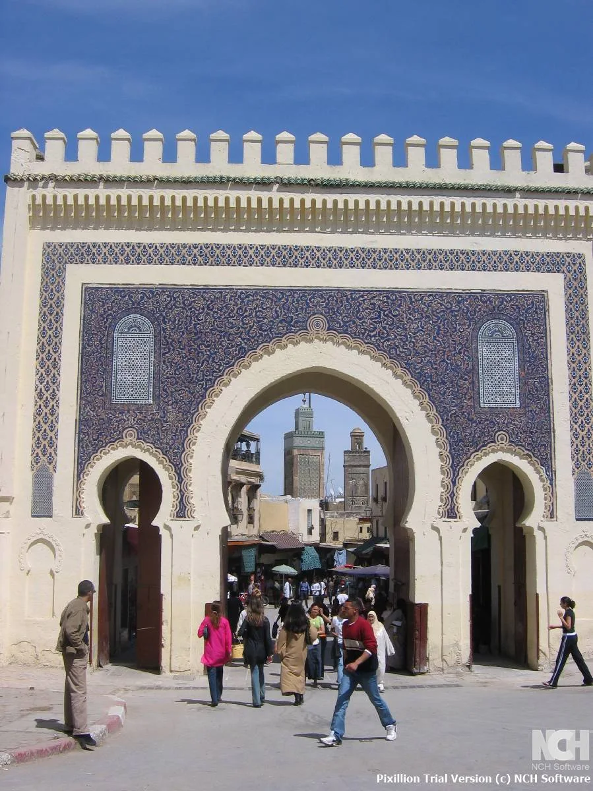

Grand journeys · PRIVATE JOURNEY
7-Day Food, Craft and Imperial Cities Tour
A culture-led city route focused on markets, workshops, medina walks and slower meals from Casablanca to Marrakech.

YOUR ROUTE
Casablanca Rabat Meknes Fes Beni Mellal Marrakech
A day-by-day starting point.
These itinerary ideas are flexible. Confirm the final schedule and overnight locations with us before booking.
DAY 01 Casablanca arrival and Atlantic first impressions
Begin with Casablanca's oceanfront and a relaxed first night before the imperial-city route begins.
DAY 02 Rabat and Meknes stories
Travel through Rabat's historic quarter and continue toward Meknes, adding monuments or quiet medina time as preferred.
DAY 03 Volubilis countryside to Fes
Use the day for Roman ruins near Volubilis, rural views and arrival in Fes before dinner.
DAY 04 Fes workshops and medina life
Spend a full day with a local guide, shaping stops around craft workshops, food markets, architecture and a slower lunch.
DAY 05 Middle Atlas pause
Leave Fes toward the Middle Atlas and Beni Mellal area, breaking the journey with mountain views and a calmer evening.
DAY 06 Marrakech souks and flavors
Continue to Marrakech and begin exploring around the medina, gardens or food stalls depending on arrival time.
DAY 07 A Marrakech day at your pace
Plan a flexible final day for a guided walk, hammam time, cooking class or shopping before your onward travel.
Places along the way
MAKE IT PERSONAL
Your Morocco starts
with a little curiosity.
A favourite place, a few dates, a big idea. Build a journey around you.